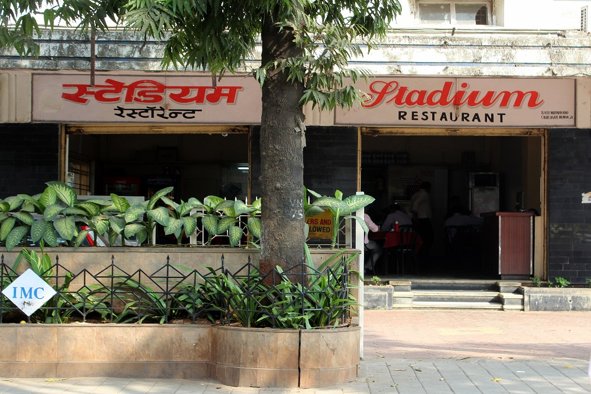
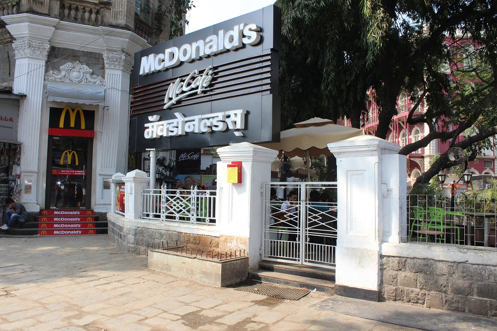
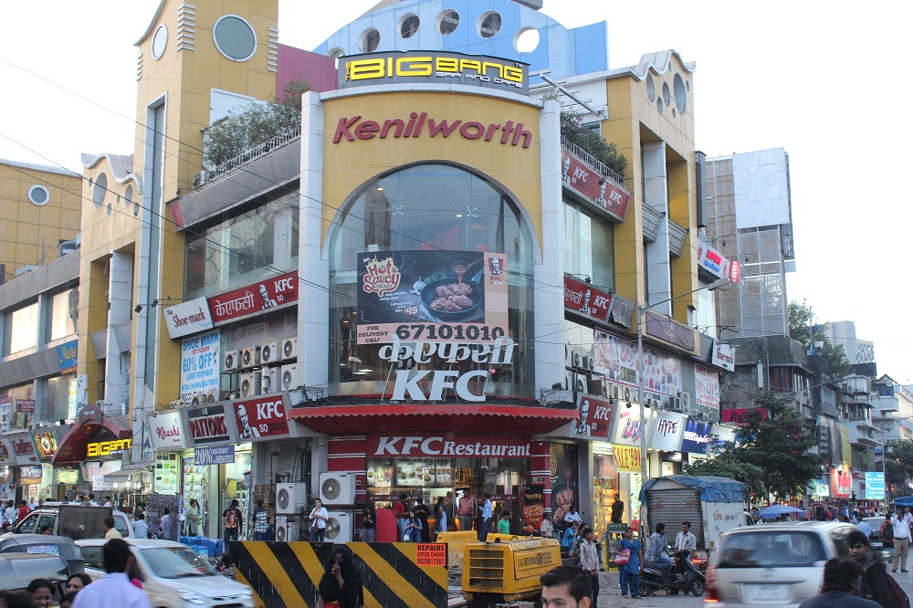
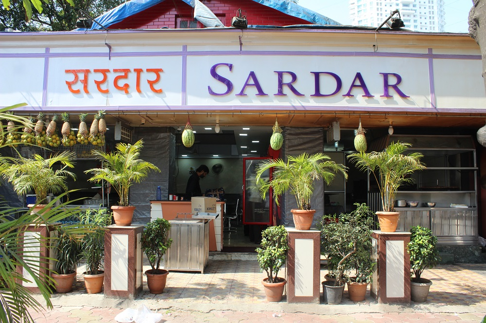

‘Ae boss Lucky se sidha lena aur Elco ke ekdum samne rok dena’. Believe it or not we've all been using restaurants in Mumbai as landmarks now. Here’s a list of some of the most famous meeting points in Mumbai.
Elco Pani Puri Centre, Hill Road, Bandra
If you are a hill-road shopper and have not been able to find your way then Elco helps. No, it’s not a GPS tracker but ask anyone where that fancy bag shop is and you will be guided with Elco as the landmark.

Stadium Restaurant, Churchgate
Churchgate station in itself is a legendary landmark but if you want to move about, there is nothing better than the Stadium Restaurant to guide you.
Pizza By The Bay, Marine Drive
Lost on Marine Drive? Don’t worry, Pizza by the Bay right at the corner is where you’ll find the lost friends.

McDonald's, Fort
The fast food joint bang opposite CST has been a meeting point for students, street shoppers and co-workers alike.
Leopold Café, Colaba
Besides being famous as a hotspot for foreigners in Mumbai, Leopold Café has been guiding all the first-timers on Colaba Causeway.

KFC, Linking Road, Bandra
Tell your rickshaw driver that you need to go to Linking Road KFC and you’ll find yourself on the right track. Yes, the landmark is that popular. Even Ranveer Singh couldn't think of a better location to dance than the busy street near KFC.

Sardar Pav Bhaji, Tardeo
The long cars waiting in a queue to get one plate of butter-laden pav bhaji is proof of Sardar’s popularity. Besides being famous for its food, this place works as the perfect landmark for your Tardeo whereabouts.